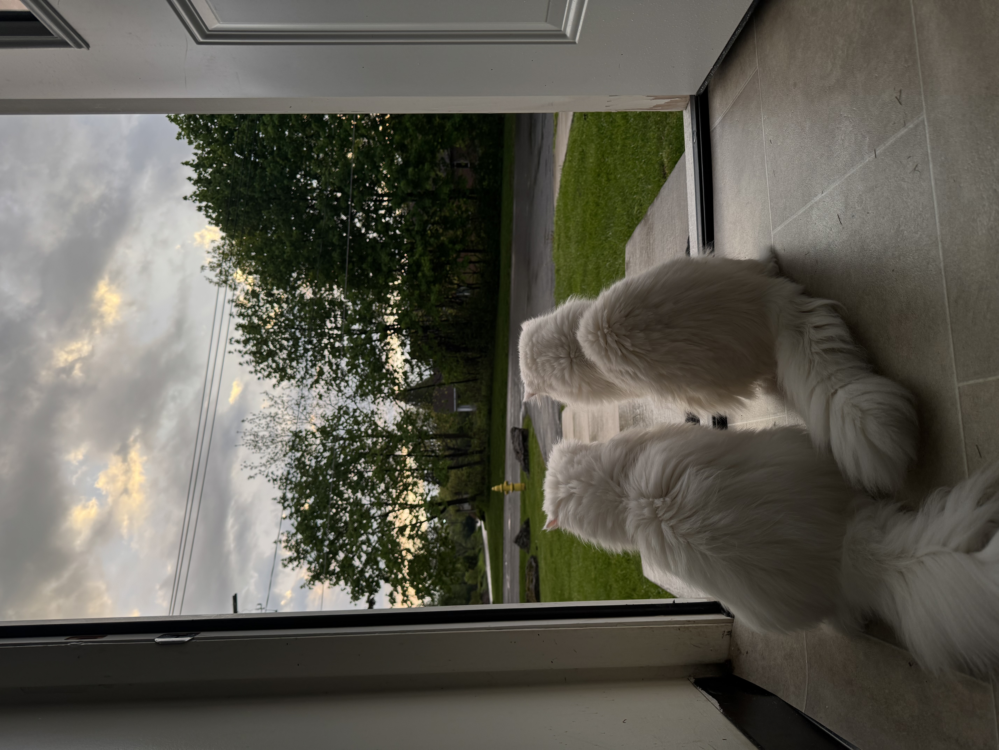

Grooming
Persian cats have long fur that needs regular grooming. Brushing helps keep the coat clean and reduces tangles.
Their eyes should also be checked and cleaned when needed because Persian cats can have watery eyes.
Feeding and Daily Care
Persian cats need fresh water and appropriate food every day. A clean and comfortable living area is also important.
Regular veterinary checkups can help keep cats healthy and allow problems to be noticed early.
Personality
Persian cats are often calm and affectionate. However, each cat has its own personality and habits.
Mimi and Miro are a good example because they have different personalities even though they are both Persian cats.

Back to the Home Page
Return to the Persian cats home page to learn more about Mimi and Miro.